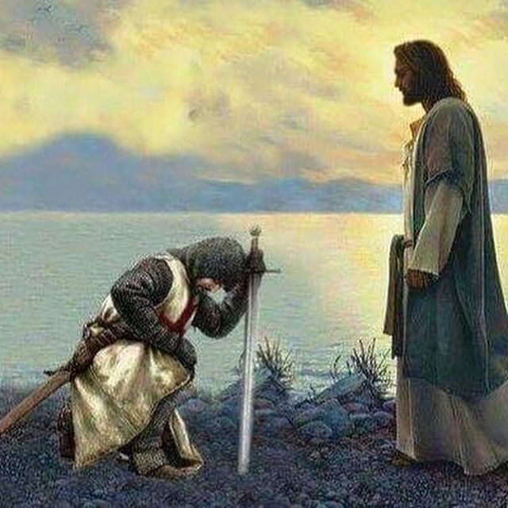

Guerreiros
Guerreiros de Jesus"" é uma expressão que se refere aos seguidores de Jesus Cristo que estão engajados em uma batalha espiritual contra as forças do mal. Esses guerreiros são aqueles que se dedicam a viver de acordo com os ensinamentos de Jesus e a propagar o amor e a mensagem do evangelho.
Temer ao Senhor significa ter reverência e amor por Ele e guardar os Seus mandamentos. Servir ao Senhor é demonstrado pela maneira como vivemos os mandamentos que recebemos de Deus; pelo trabalho que fazemos para ajudar a estabelecer o reino de Deus na Terra; e pela forma como agimos para com o nosso próximo.